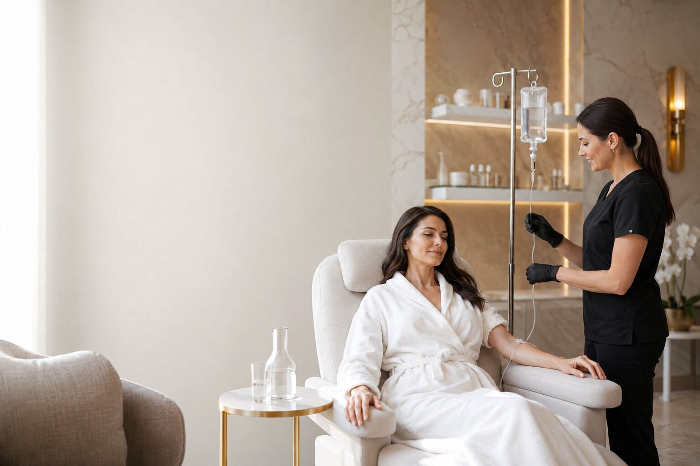

IV Therapy and Wellness Injections in Northern Virginia
Hydrate. Replenish. Recover. Feel Your Best.
At INFUDERM, our IV Therapy and Wellness Injections are designed to support hydration, recovery, immune health, energy levels, and overall wellness.
Every treatment is tailored to your individual needs and administered in a comfortable clinical environment under professional supervision.

Replenishment Delivered Directly
IV Therapy delivers fluids, vitamins, minerals, and nutrients directly into the bloodstream through an intravenous infusion.
Because nutrients bypass the digestive system, they are delivered efficiently and directly to the body.
Many patients choose IV Therapy to support:
- Hydration
- Recovery
- Wellness
- Immune Support
- Energy Levels
- Nutrient Replenishment
Targeted Nutrient Support
Wellness Injections, also known as IM (intramuscular) injections, deliver nutrients directly into muscle tissue for efficient absorption.
They are often chosen by individuals looking for convenient wellness support without the longer appointment time associated with IV infusions.
Two Personalized Wellness Options
Both options can be personalized based on your goals and provider recommendations.
IV Therapy
- Administered through a vein
- Larger fluid and nutrient delivery
- Typically 30–60 minutes
- Hydration and nutrients combined
- Ideal for hydration and recovery
Wellness (IM) Injections
- Administered into muscle
- Targeted nutrient delivery
- Usually completed in minutes
- Focused wellness support
- Ideal for quick nutrient support
Benefits of IV Therapy & Wellness Injections
Patients choose IV and IM treatments for personalized wellness support in a comfortable clinical environment.
Hydration Support
Helps replenish fluids and support overall wellness.
Nutrient Replenishment
Delivers essential vitamins and nutrients directly to the body.
Immune Support
Supports overall immune health and wellness goals.
Recovery Support
Helps patients feel refreshed and revitalized.
Convenient Options
Multiple therapies available based on individual needs.
Personalized Care
Treatment plans are tailored to your wellness objectives.
Hydration & Wellness Solutions
Your treatment recommendation depends on your wellness goals, medical history, and individual needs.
Plain NS or LR Hydration
Designed to support hydration and help replenish fluids when the body needs additional hydration support.
Get-Up-and-Go IV
Formulated for individuals looking to support energy levels and overall wellness.
Immunity IV
Supports immune health with targeted nutrients and hydration.
Quench IV
Focused on hydration and replenishment to help you feel refreshed.
Reboot / Hangover Relief IV
Designed to support hydration and recovery after periods of dehydration.
Glutathione IV with NS Hydration
Combines hydration support with glutathione, a powerful antioxidant commonly used in wellness protocols.
Quick & Convenient Nutrient Support
Glutathione IM Injection (200 mg)
A convenient wellness injection that delivers glutathione directly into muscle tissue as part of a personalized wellness plan.
Personalized Wellness Support
You may be a good candidate if you:
- Want hydration support
- Want to support overall wellness
- Are looking for convenient nutrient replenishment
- Want recovery support
- Prefer personalized wellness solutions
A consultation is recommended to determine the most appropriate treatment for your needs.
How Long Does an IV Therapy Session Take?
Most IV Therapy sessions typically take between 30–60 minutes, depending on the selected treatment and individual needs.
Wellness Injections
Wellness Injections (IM injections) are generally completed in just a few minutes, making them a convenient option for individuals with busy schedules.
Your provider will discuss the expected treatment time during your appointment.
Are IV Therapy & Wellness Injections Safe?
At INFUDERM, patient safety is our highest priority. Before treatment, we carefully evaluate:
- Medical History – Helps identify factors that may affect treatment recommendations.
- Current Medications – Ensures treatments align with your existing medications and supplements.
- Wellness Goals – Allows us to personalize therapy based on your individual objectives.
- Individual Health Considerations – Supports safe and appropriate treatment planning.
This comprehensive review helps ensure your treatment is personalized and appropriate for your needs.
How Should I Prepare for My IV Therapy Appointment?
To help ensure a comfortable experience, we recommend:
- Drink Water – Arrive well-hydrated whenever possible.
- Eat a Light Meal – Avoid arriving on an empty stomach.
- Bring Medication Information – Inform your provider about current medications or supplements.
- Wear Comfortable Clothing – Choose clothing that allows easy access to your arms.
- Share Relevant Medical History – Let us know about health conditions or concerns before treatment.
What Should I Do After IV Therapy?
Most patients can return to their normal activities immediately after treatment.
For best results:
- Continue drinking water throughout the day.
- Follow recommendations provided by your healthcare professional.
- Maintain healthy nutrition and lifestyle habits.
- Contact our team if you have questions following your treatment.
What Happens During an IV Vitamin Infusion Therapy?
Your comfort and safety are our priorities throughout the treatment process.
Consultation
We’ll review your health history, wellness goals, current medications, and individual needs.
Preparation
You’ll relax comfortably while your selected IV formulation is prepared.
Treatment
A small IV catheter is gently placed into a vein, typically in the arm, and your infusion begins.
Monitoring
Our team will monitor you throughout your session to ensure a comfortable experience.
Completion
Once your infusion is complete, the IV is removed and you may return to most normal activities immediately.
How Many IV Therapy Sessions Will I Need?
The number of sessions recommended depends on your wellness goals, lifestyle, and individual needs.
Some patients choose IV Therapy or Wellness Injections occasionally, while others incorporate treatments into their ongoing wellness routine.
Factors that may influence treatment frequency include:
- Hydration needs
- Wellness goals
- Lifestyle factors
- Provider recommendations
- Individual response to treatment
A personalized treatment plan will be created during your consultation.
When Will I Notice the Benefits of IV Therapy?
Many patients report feeling refreshed, hydrated, or revitalized shortly after treatment, while others may notice benefits over the following days.
Results vary depending on:
- Treatment selected
- Individual wellness goals
- Hydration status
- Lifestyle factors
- Overall health considerations
Your provider will discuss realistic expectations during your consultation.
How Often Should I Receive IV Therapy or Wellness Injections?
Treatment frequency depends on your goals and the type of therapy selected.
Some individuals schedule treatments occasionally, while others choose ongoing wellness support as part of their routine.
Your provider will recommend a treatment schedule based on:
- Wellness objectives
- Lifestyle needs
- Treatment type
- Individual health considerations
Is IV Therapy Safe and Who Should Avoid It?
IV Therapy is generally well tolerated when administered by qualified healthcare professionals following an appropriate consultation and evaluation. However, treatment may not be appropriate for everyone.
Additional evaluation may be required for individuals with:
- Certain heart conditions
- Kidney disorders
- Specific medical conditions affecting fluid balance
- Certain medication considerations
- Active infections or acute medical concerns
During your consultation, we’ll review your medical history to help determine whether IV Therapy or Wellness Injections are appropriate for you.
What Conditions or Wellness Goals Can IV Therapy Support?
IV Therapy is commonly chosen by individuals looking to support hydration, recovery, energy levels, and overall wellness.
Depending on the treatment selected, IV Therapy may be used to support:
- Hydration and fluid replenishment
- Recovery after travel or busy schedules
- Immune system support
- Low energy and fatigue
- General wellness maintenance
- Nutrient replenishment
- Physical recovery support
- Skin and wellness goals
- Hangover recovery support
During your consultation, we’ll discuss your goals and recommend the most appropriate IV Therapy or Wellness Injection option for your needs.
How Much Does IV Therapy & Wellness Injections Cost?
The cost of IV Therapy and Wellness Injections varies depending on the treatment selected, ingredients included, treatment duration, and your personalized wellness goals.
Factors that may influence pricing include:
- Type of IV Therapy or Wellness Injection
- Treatment ingredients and formulation
- Number of sessions recommended
- Individual wellness objectives
- Combination treatment plans
During your consultation, we’ll discuss available treatment options and provide transparent pricing based on your personalized treatment plan.
Schedule a FREE consultation to learn more about IV Therapy and Wellness Injection options at INFUDERM.
Why Choose INFUDERM for IV Therapy and Wellness Injections in Northern Virginia?
Personalized Care. Medical Precision. Absolute Safety.
Every patient begins with a personalized consultation where we evaluate:
Health History | Wellness Goals | Lifestyle Factors | Current Concerns | Individual Needs
Personalized Wellness Planning
Treatment recommendations tailored to your unique wellness goals.
Professional Clinical Oversight
Care provided under experienced medical supervision.
Quality Nutrient Formulations
Carefully selected ingredients designed to support overall wellness.
Patient-Centered Care
Your comfort, safety, and individual needs always come first.
Comfortable Treatment Environment
Relaxing and welcoming settings at our Reston and Aldie locations.
Ongoing Support
Continued guidance and recommendations throughout your wellness journey.
IV Therapy & Wellness Injections FAQ
Click the plus sign to expand each question.
IV Therapy delivers fluids and nutrients directly into the bloodstream through an intravenous infusion.
Wellness Injections deliver nutrients into muscle tissue for efficient absorption and convenient wellness support.
IV Therapy delivers fluids and nutrients through a vein, while wellness injections provide targeted nutrient support through muscle tissue.
Most appointments take between 30 and 60 minutes.
Most patients experience minimal discomfort during treatment.
Yes. Hydration support is one of the most common reasons patients choose IV Therapy.
Glutathione is a naturally occurring antioxidant commonly used in wellness protocols.
Treatment frequency varies based on individual goals and provider recommendations.
Your provider will recommend a schedule based on your wellness objectives and treatment plan.
Most patients tolerate treatment well. Your provider will review potential risks and considerations during your consultation.
IV Therapy is commonly chosen for hydration, recovery, energy levels, immune support, nutrient replenishment, physical recovery, skin and wellness goals, and hangover recovery support.
INFUDERM offers personalized treatment plans, professional clinical oversight, quality nutrient therapies, and patient-centered care in Reston, Aldie, Ashburn, Herndon, Chantilly, South Riding, Sterling, Leesburg, Fairfax, Vienna, Great Falls, and nearby Northern Virginia.
IV infusion cost varies based on the therapy selected, treatment duration, ingredients, and personalized recommendations. During your consultation, we’ll provide transparent pricing information.
IV Therapy and Wellness Injections may benefit individuals looking to support hydration, nutrient replenishment, recovery, busy lifestyles, and overall wellness.
IV hydration therapy is commonly used to help replenish fluids and support hydration needs.
IV Therapy is generally well tolerated when administered by trained healthcare professionals following an appropriate consultation and evaluation.
Individual experiences vary, but many patients report feeling refreshed and hydrated shortly after treatment.
Yes. IV Therapy and Wellness Injections can be customized for both men and women based on individual wellness goals.
Glutathione IV is administered through an intravenous infusion, while Glutathione IM is delivered through an intramuscular injection. Your provider can help determine which option is most appropriate.
In some cases, IV Therapy and Wellness Injections may be combined as part of a personalized wellness plan. Your provider will discuss appropriate options during consultation.
Wellness Solutions Close to Home
INFUDERM proudly provides IV Therapy and Wellness Injections for patients throughout Northern Virginia, including Reston, Aldie, Ashburn, Herndon, Chantilly, South Riding, Sterling, Leesburg, Fairfax, Vienna, Great Falls, and surrounding communities.
Whether you’re looking for hydration support, wellness injections, or personalized nutrient replenishment, our team is here to help you feel your best.
Reston Area
Herndon • Vienna • Fairfax • Sterling • Great Falls
Aldie Area
Ashburn • South Riding • Stone Ridge • Chantilly • Leesburg
Ready to Hydrate, Replenish, Recover, and Feel Your Best?
Schedule your free consultation to learn which IV Therapy or Wellness Injection option may be right for your wellness goals.
Reston & Aldie, Virginia · Call (571) 375-9180